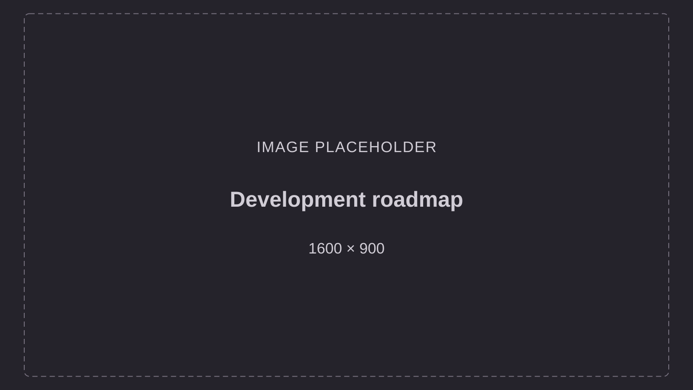

Awakening
Define profiles, task contracts, skills, tools and human approval. Demonstrate a single bounded quest.
THE ROAD AHEAD
A foundation blueprint, not a delivery schedule. Validate the smallest useful collaboration before expanding.
Foundation blueprint · Proposed capabilities
Define profiles, task contracts, skills, tools and human approval. Demonstrate a single bounded quest.
Demonstrate coordination across a small number of Delvers, with task dependencies and a verified Cairn integration.
Introduce reusable Rituals, additional Circles, integrations and observability only when needed.
Evaluate outcomes, curate memory and improve capabilities through human-approved changes.
BOUNDARIES